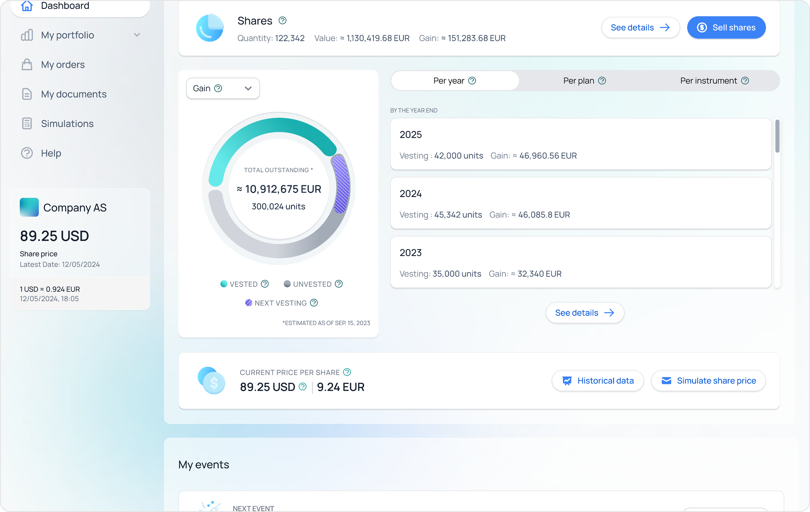
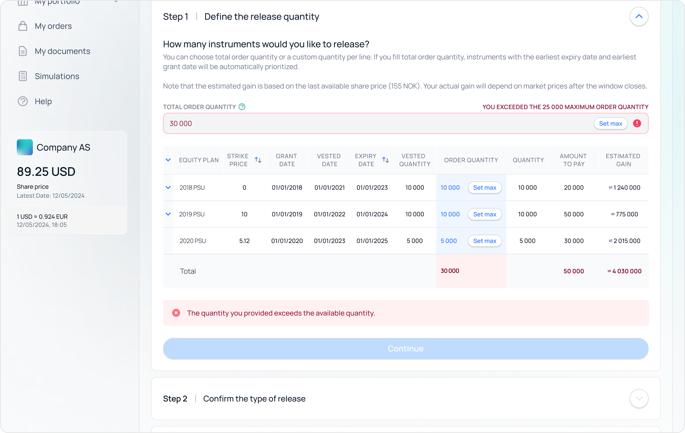
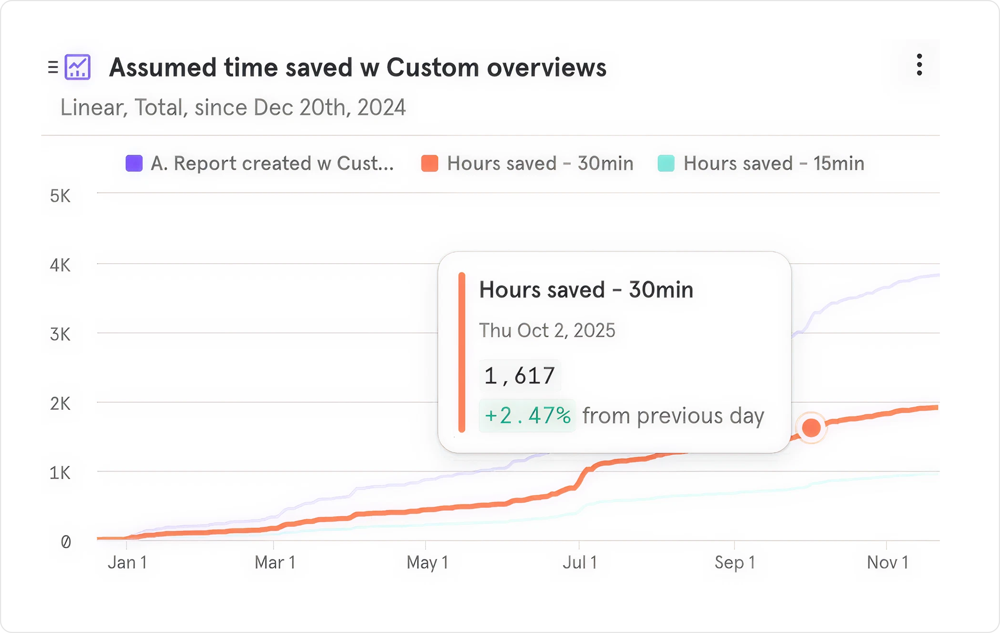
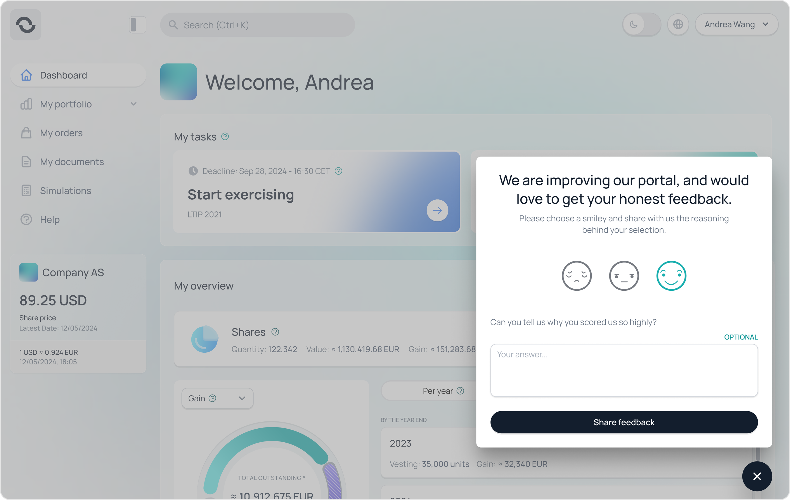
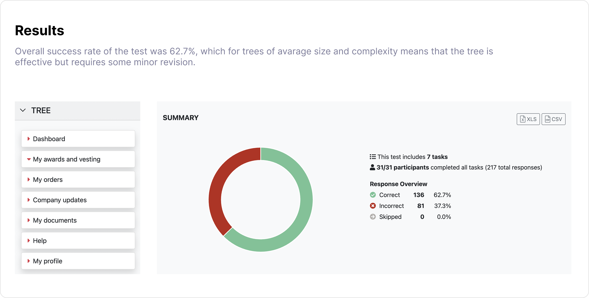
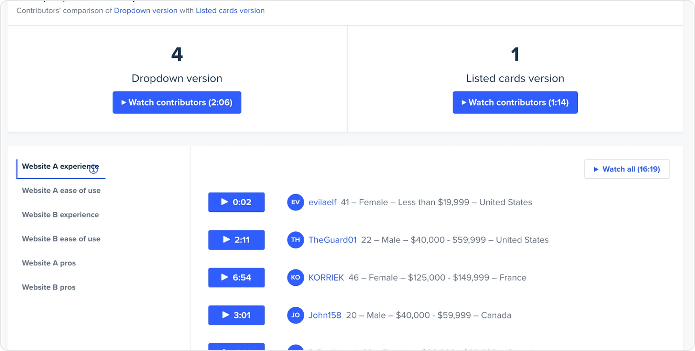
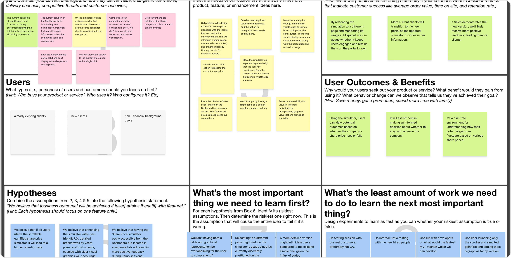
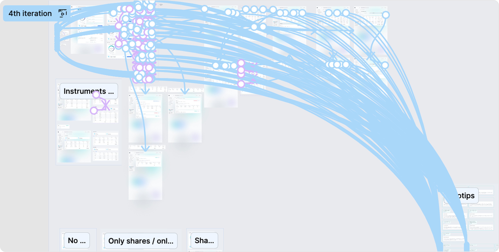
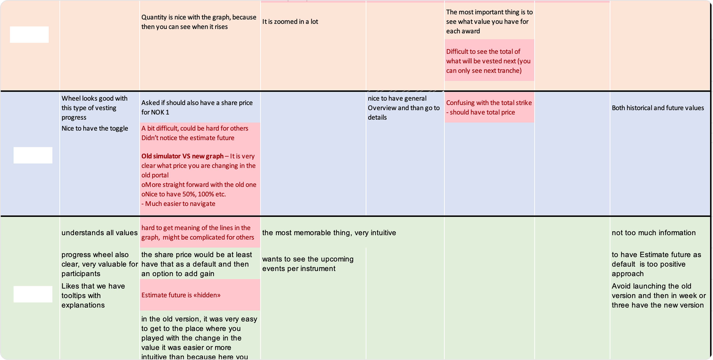
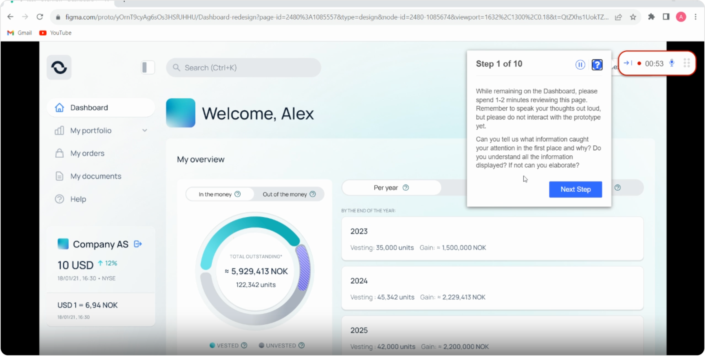

Designing an employee portal that helps people understand their equity, with confidence and ease. My goal was to turn a complex, finance-heavy product into something that feels approachable, clear and trustworthy.
01Overview
Problem summary
Employees interact with their equity only a few times a year, yet are asked to make important financial decisions across instruments, tax rules, trading windows and vesting schedules. Most don't fully understand the terms, the timing or the trade-offs — and a single mistake can be costly and hard to undo.
How I framed it
Most equity tools are designed for the people who work with equity every day — finance, HR, plan administrators. The portal was being used by everyone else: regular employees who log in twice a year and need to remember everything from scratch each time. I treated this as a re-engagement problem, not a finance UI problem. Every interaction had to assume the user had forgotten the previous one, and the dashboard had to answer two questions before anything else: what do I have right now, and what should I do next?
Goal
- Build a portal that explains equity in context, in plain language — without rewarding users for being financially literate.
- Guide important actions safely, with eligibility and consequences visible before the user commits.
- Build trust through clarity, transparency and a calmer visual tone than typical fintech.
02Core Challenges
The portal was originally built for stock options. As more instrument types, country-specific tax rules and audience profiles entered the platform, the experience needed to scale — not just visually, but cognitively.
- Multiple instruments, one experience: complex equity types stacked into a single UI risked overwhelming users.
- Low clarity on what I have now versus what I'll get later.
- Equity actions are high-risk: exercising, sales and acceptance flows had to feel safe.
- Customisation at scale: clients wanted their own branding, wording and process variations.
- Desktop-first legacy, mobile catching up: usage data showed growing mobile traffic, while mobile was a neglected afterthought.
03Key Solutions
The portal was redesigned as a set of flexible, scalable building blocks. Each piece focused on making complex equity easier to interpret and act on — guiding people through what was theirs and what to consider next.
Multi-instrument Dashboard & My Overview
The original dashboard assumed everyone held a single instrument type. As soon as employees had a mix — options, RSUs, shares, savings — the page got crowded and the totals stopped meaning the same thing for everyone. I redesigned the dashboard around what the user holds, not what the system can store. The three views (Per Year, Per Plan, Per Instrument) emerged from research as the three questions employees actually ask: how does this change over time, what plan does it belong to, and what kind of equity is it?

Share Price Simulator
The earlier simulator was a hover-state on the share price card — easy to miss and easy to misread. In testing, employees treated it as marketing dressing rather than something they could actually use. I argued the simulator should be its own destination, not a flourish, and that the entry point on the dashboard should make the action explicit ("Simulate"). Pulling it onto a dedicated page also gave us room to show the controls that matter: scenario, time horizon, and a clear comparison against the user's actual equity.

Equity Actions & Processes
Equity actions are rare but consequential — exercising options, selling shares, accepting an award, choosing a savings rate. The previous flows were technically correct but emotionally tense: dense forms, internal jargon, and confirm buttons that didn't really tell you what you were committing to. I designed each action as a short, ordered conversation: one decision per step, the consequence visible inline, and the user's own language ("purchase share", not "subscribe to issuance") instead of internal terminology. Every step shows what's about to change before you confirm — there are no irreversible last clicks.

Custom Overviews (Configurable Grouping)
The same configurable grouping pattern was reused on the participant side — letting clients define how participants see their portfolio across plans, units and time.

Education, Content & Branding
Equity is a learning curve and a localisation problem at the same time — every country has different terminology, every employer wants their own voice. Rather than write static help articles, I designed education as a layer that sits inside the product: tooltips appear at the term, examples appear at the calculation, deeper reading is one step away when the user wants it. A separate wording system lets clients adjust tone, labels and explanations without designers being in the loop, and brand theming adopts the client's primary colours while keeping the clarity and accessibility of the base system intact.

Feedback Loop & Mobile
An in-portal feedback tool created a direct line from participants to the product team, surfacing real qualitative insights every day. With usage growing on mobile, design also shifted from desktop-first toward mobile, speeding up later delivery.

04Research & Testing
Most decisions were grounded in research — moderated and unmoderated, internal and external, sometimes scrappy and always close to the people actually using the portal.
Card sorting & information architecture testing

Moderated and unmoderated testing

Lean UX Canvas & Hypothesis mapping

Prototype tests (desktop + mobile)

Feedback collection from Sales demos and Customer Success calls

Final usability test pass

Key patterns we found
- People log in infrequently and mostly want to know two things: "What do I have now?" and "What should I do next?"
- Even financial-literate users assumed the worst about equity terms — examples and visual metaphors helped.
- Visual polish read as credibility, but understanding still required real plain-language explanations.
- Tooltips were appreciated, but most users only opened them once during onboarding — repeat visits skipped them.
05Design Principles
The approach moved from domain-driven discovery into iterative simplification. Simplicity was achieved not by removing detail, but by revealing it only when the user needed it.
Show the whole story, then let users zoom in
High-level "now vs future" first, with drill-downs by year, plan or instrument.
Support all instruments without showing all complexity at once
Tabs, tailored labels and conditional states per instrument type.
Educate in context, not in a separate manual
Tooltips, FAQs and links to deeper learning where questions arise.
Design for rare but important actions
Exercising or selling shares is infrequent but high-stakes — flows make confirmation explicit.
Full discovery, minimal scalable MVP
Map all edge cases and future needs, but ship the simplest version that can grow.
Iterate to simplify
Use research sessions and feedback to remove friction, not just polish.
06Outcomes
The redesign did more than refine the UI — it changed how Optio employees, Customer Success and Sales interact with the product.
- Smooth migration from the old portal to the new Dashboard for existing clients, while accommodating new client requests.
- The redesigned Dashboard contributed to one of the strongest months of positive feedback for the product (September 2024).
- A later mobile app rollout was significantly faster because the dashboard and IA were already designed with responsive intent.
- Customer Success spends less time explaining basic concepts and chasing edge questions.
- Internally, collaboration with Customer Success, Sales and Tax & Finance experts was much tighter, and that knowledge directly shaped UX decisions.